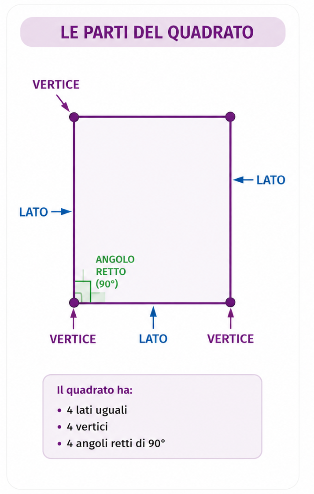
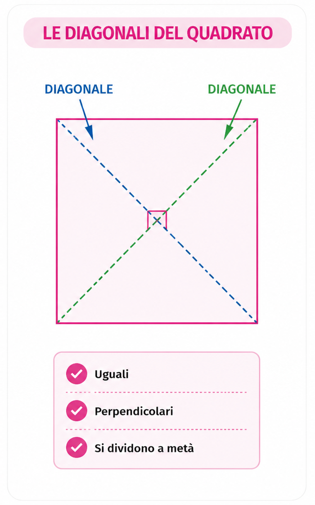

Conosci il quadrato, le sue caratteristiche, il perimetro e l'area.
Il quadrato è un quadrilatero con 4 lati uguali e 4 angoli retti di 90°.
Le sue diagonali sono:


Il perimetro è la somma dei quattro lati.
L'area si calcola moltiplicando il lato per se stesso.
La diagonale divide il quadrato in due triangoli rettangoli uguali.
Domanda
Quanti lati ha un quadrato?
Risposta
Quattro lati uguali.
Domanda
Quanto misurano gli angoli del quadrato?
Risposta
90° ciascuno.
Domanda
Formula del perimetro?
Risposta
P = l × 4
Domanda
Formula dell'area?
Risposta
A = l × l
Domanda
Come sono le diagonali?
Risposta
Sono uguali, perpendicolari e si dividono a metà.